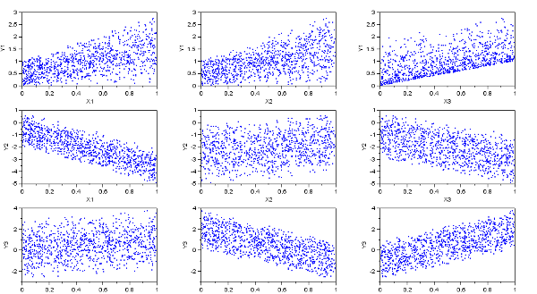
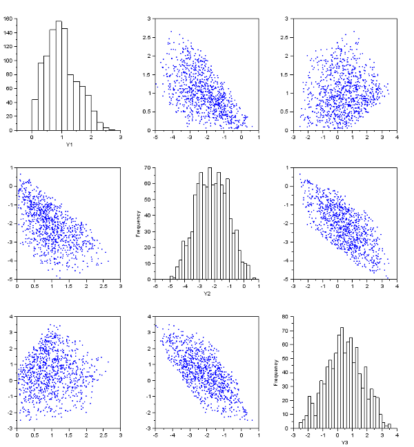

Scatter plot matrix
In the script below, we consider a model with 3 inputs and 3 outputs. Then we plot Y versus X.
m=1000; x1=distfun_unifrnd(0,1,m,1); x2=distfun_unifrnd(0,1,m,1); x3=distfun_unifrnd(0,1,m,1); y1=2*x1.*x2+x3; y2=-3*x1+x2.^2-2*x3; y3=sin(x1)-3*x2+3*x3; x=[x1,x2,x3]; y=[y1,y2,y3]; xlabels=["X1","X2","X3"]; ylabels=["Y1","Y2","Y3"]; scf(); plotmatrix(x,y,"xlabels",xlabels,"ylabels",ylabels); |  |  |
The previous script produces the following output.

In the script below, we consider a model with 3 inputs and 3 outputs. Then we plot X versus X, with histograms on the diagonal.
m=1000; x1=distfun_unifrnd(0,1,m,1); x2=distfun_unifrnd(0,1,m,1); x3=distfun_unifrnd(0,1,m,1); y1=2*x1.*x2+x3; y2=-3*x1+x2.^2-2*x3; y3=sin(x1)-3*x2+3*x3; y=[y1,y2,y3]; ylabels=["Y1","Y2","Y3"]; scf(); plotmatrix(y,"xlabels",ylabels); | | |
The previous script produces the following output.
